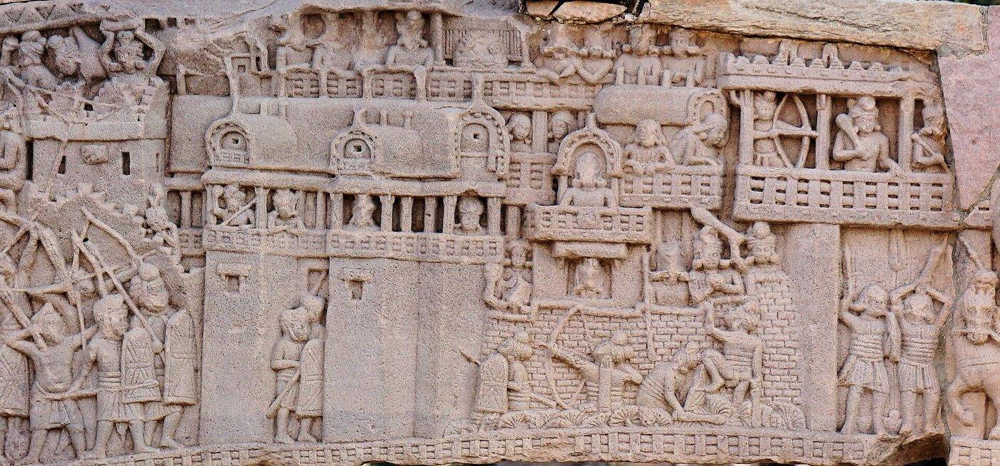
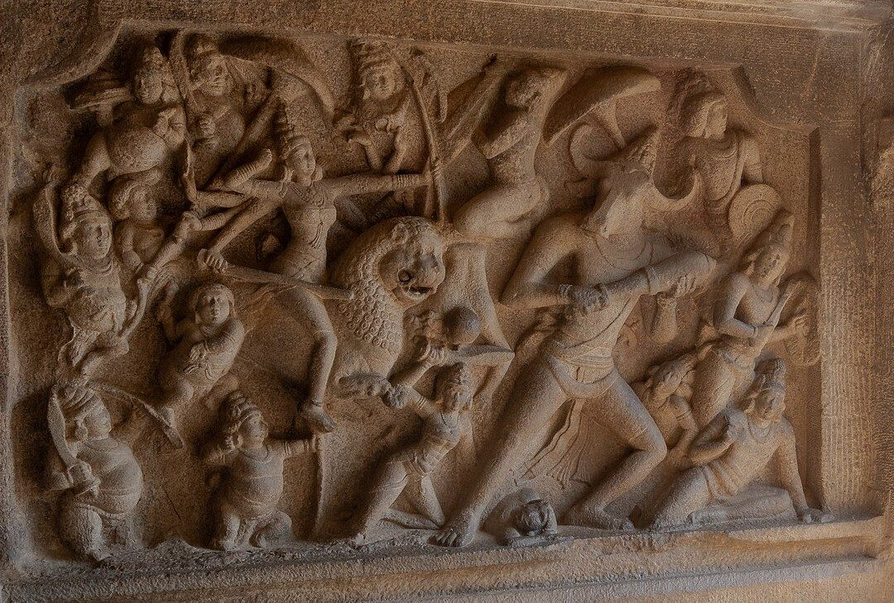
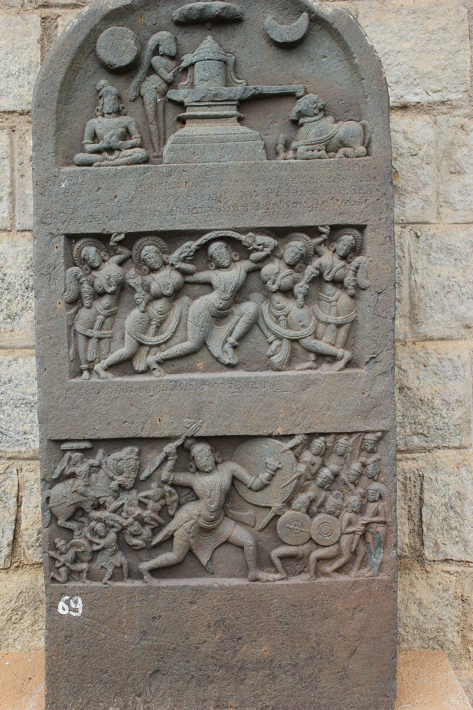

Chapter 13: The Making of Warriors: Education, Society and Martial Culture¶
13.1 Introduction¶
Armies are made of men — and occasionally women — who have to be recruited, trained, fed, paid, honoured and remembered. This chapter turns from the conduct of war to the warrior: how princes and soldiers were educated, who was allowed to bear arms and who was excluded, how warrior identities were formed and changed, and how martial values were expressed in art, literature, festival and ritual. It draws on the epics and the Arthaśāstra for the ideals of royal education, on the work of Dirk Kolff and William Pinch for the social history of soldiering, and on a range of art-historical and ethnographic evidence for martial culture (Kolff 1990; Pinch 2006).
13.2 The Education of Princes¶
13.2.1 The epic model¶
The epics give a vivid, idealised picture of the education of princes. In the Mahābhārata, the Pāṇḍava and Kaurava princes are taught first by Kṛpa and then by Droṇa, a brahmin master of arms, who trains them in archery, the use of the mace, sword and spear, chariot-driving and the riding of horses and elephants (Buitenen 1973–1978). Their training ends in a public tournament (raṅga) in which each displays his skill before the king and the people: Arjuna shows his mastery of the bow, Bhīma and Duryodhana fight with maces until the fight threatens to become real. Each prince has his specialism — Yudhiṣṭhira the chariot and spear, Bhīma and Duryodhana the mace, Nakula and Sahadeva the sword, Arjuna the bow.
In the Rāmāyaṇa, the young Rāma and Lakṣmaṇa are taken by the sage Viśvāmitra to protect his sacrifice from demons, and on the way he teaches them two spells against hunger and fatigue and gives them divine weapons. The figure of the brahmin or sage who teaches arms to princes — Droṇa, Kṛpa, Paraśurāma, Viśvāmitra — recurs throughout the epics.
13.2.2 The Arthaśāstra’s curriculum¶
The Arthaśāstra lays down a curriculum for the prince that combines intellectual and military training (AŚ 1.5). After learning to write and count, he is to study the three Vedas, philosophy (ānvīkṣikī), economics (vārttā) and government (daṇḍanīti) under appropriate teachers. His day is to be divided: in the first part he should receive training in the arts of elephants, horses, chariots and weapons, and in the second he should listen to accounts of the past (itihāsa), including the Purāṇas, stories, examples, the law and the science of politics (Kangle 1960–1965; Olivelle 2013). The ideal prince is thus a soldier and a scholar, trained in self-discipline (vinaya), with control of his senses.
The Arthaśāstra and the Mānava Dharmaśāstra also warn kings against the vices of pleasure, among them hunting, gambling, sleeping by day, women and drink (MDh 7.47) (Olivelle 2005). Hunting nevertheless remained the favourite sport and military exercise of kings, training riders and archers and displaying royal power (Section 4.10).
13.2.3 Medieval courts¶
Medieval courts maintained this ideal. Daud Ali has shown how early medieval courtly culture prescribed a disciplined life for princes and courtiers in which martial skills, courtly manners, literary taste and loyalty were combined (Ali 2004). The Mānasollāsa of the Cāḷukya king Someśvara III describes the recreations of a king, including wrestling, horsemanship, elephant-riding, archery contests and the hunt (Shrigondekar 1925–1961).
13.3 The Training of Princes in the Mughal and Successor States¶
Mughal princes learned war by practice as much as by instruction. They were taught riding, archery, swordsmanship and musketry from childhood, took part in royal hunts, and were given commands while still young: Aurangzeb, for example, was appointed governor of the Deccan at the age of eighteen and led a campaign against the Bundela chief Jujhār Singh in his teens. Akbar, who never learned to read, was nonetheless a skilled rider, hunter, marksman and commander, and personally took part in several battles and sieges. Princes commanded armies in the field as part of their training for rule, and their success or failure in war often determined their standing in the competition for the throne (Richards 1993).
Rajput princes were trained in a similar way in riding, hunting and the use of arms, and they too learned by commanding the contingents that their families supplied to the Mughals. Maratha tradition records that Śivājī was brought up at Pune under the guardianship of his father’s administrator Dādājī Koṇḍadev, learning riding and arms alongside the young men of the hill villages who later became his soldiers (Gordon 1993). These examples show that, in practice, the education of princes in early modern India combined formal instruction in literature and religion with an apprenticeship in war, conducted through hunting, service and command.
13.4 Birth, Caste and the Right to Arms¶
13.4.1 The norm¶
In the theory of the four social classes (varṇa), the profession of arms belongs to the kṣatriya, whose duties are to protect the people, to make gifts, to sacrifice and to study the Veda (MDh 1.89) (Olivelle 2005). Brahmins and vaiśyas may take up arms in an emergency, when the social order is threatened (MDh 8.348), and the epics present brahmin warriors such as Droṇa, Kṛpa, Aśvatthāman and Paraśurāma. The normative texts say little about the arms-bearing of śūdras and of groups outside the four classes, but they generally assume that warfare is a matter for the higher classes.
13.4.2 Ekalavya and Karṇa¶
Two famous episodes of the Mahābhārata show how birth could limit access to martial training. Ekalavya, a prince of the Niṣāda forest people, asks Droṇa to teach him and is refused. He makes a clay image of Droṇa and trains before it until he becomes a better archer than Arjuna, Droṇa’s favourite pupil. When Droṇa discovers this, he demands as his teacher’s fee the thumb of Ekalavya’s right hand, and Ekalavya cuts it off and gives it, losing his skill. Karṇa, a great warrior raised by a charioteer, is barred from competing with Arjuna at the tournament when Kṛpa demands to know his lineage; Duryodhana makes him a king on the spot to give him the necessary status, and he remains loyal to Duryodhana for the rest of his life.
These stories have been read in many ways. In the epic they serve partly to explain Arjuna’s supremacy and Karṇa’s tragic loyalty. Modern readers, especially in the anti-caste movements of the nineteenth and twentieth centuries, have seen in Droṇa’s demand an emblem of the exclusion of lower castes and forest peoples from learning, and Ekalavya has become a symbol of talent denied by birth. Both readings take the stories seriously as evidence of the social order that the epic assumes.
13.4.3 The reality of recruitment¶
In practice, Indian armies always recruited far more widely than the norm suggests. The Arthaśāstra lists hired troops, guild troops and forest troops among the sources of soldiers (Kangle 1960–1965). Medieval inscriptions record soldiers and heroes from many communities, including herdsmen, hunters and peasants. In early modern Hindustan peasants took up arms as paid soldiers in great numbers, and military service could change a man’s standing and even his caste identity; that argument is set out in Chapter 17 (Section 17.3). In the south, warrior identities such as Nāyar in Kerala and Kaḷḷar and Maṟavar in Tamil Nadu were tied to military service to chiefs and kings. In Maharashtra, Śivājī’s armies drew on peasant communities of the hills. The Mughal and Deccan armies included Turks, Persians, Afghans, Abyssinians (ḥabshī), Rajputs, Marathas and men of every region.
The right to bear arms was thus a matter of power, opportunity and pay as much as of birth. At the same time, rulers often tried to control it: by restricting the possession of horses and elephants, by recruiting from particular communities they trusted, and, in the colonial period, by legislation (Chapter 19).
13.5 Warrior Communities and Social Mobility¶
Many of the communities that today claim a martial heritage acquired it through the military opportunities of particular periods. A few examples show the range.
The Marathas.
The Maratha warrior elite emerged from the peasant communities of the western Deccan, especially the Kuṇbī cultivators, through service in the armies of the Deccan sultanates and of Śivājī. Successful families claimed Rajput descent and kṣatriya status, and Śivājī’s coronation in 1674 involved an elaborate ritual to confirm his kṣatriya standing (Gordon 1993). The boundary between “Maratha” and “Kuṇbī” long remained fluid.
The Nāyars.
In Kerala, the Nāyars were a matrilineal community whose men served as the soldiers of the Kerala principalities and were trained in the kaḷari (Chapter 15). Their military role ended in the late eighteenth century, and their social organisation was transformed in the nineteenth and twentieth (Zarrilli 1998).
The Kaḷḷar and Maṟavar.
In southern Tamil Nadu, the Kaḷḷar and Maṟavar communities supplied soldiers and local chiefs (pāḷaiyakkārar, poligars) under the Nāyakas of Madurai and their successors; the Maṟavar chiefs of Ramnad and Sivaganga became rulers of small states. After the poligar wars against the East India Company at the end of the eighteenth century, the British classified some of these communities as “criminal tribes”, a stigma that outlasted the repeal of the Criminal Tribes Act in 1952.
The Bedars.
In Karnataka and the Deccan, the Bedar (Boya) communities, traditionally hunters, supplied infantry and archers to Vijayanagara, the Deccan sultanates and the Mughals; some Bedar chiefs, such as the rulers of Shorapur, became local kings.
The Jats.
The Jat peasant communities of the Punjab and the Agra–Delhi region rose to power through revolt and service in the late seventeenth and eighteenth centuries (Section 9.18); the making of Rajput identity through service is discussed in Section 17.3.
These examples show that “martial” identities were made in history, through service, reward and the claiming of status, and were not simply inherited from antiquity. The colonial theory of “martial races” later froze some of these identities into fixed categories (Chapter 19). Table 13.1 summarises some of the communities and groups whose history is closely associated with military service, as discussed in this volume. The associations are historical, not inherent: members of these communities followed many occupations, and many other groups also supplied soldiers.
| Group | Region | Military history (in brief) |
|---|---|---|
| Rajputs | North and west India | Ruling and warrior lineages from the early medieval period; Mughal allies; an often open status (Kolff) |
| Purbiyās | Eastern Ganges valley | Peasant soldiers of the military labour market; the core of the Company’s Bengal army |
| Afghans | North India | Soldiers and rulers from the Lodī period; Rohilla state in the 18th c. |
| Marathas | Western Deccan | Peasant soldiers and commanders of the Deccan sultanates and of Śivājī’s state |
| Siddīs (Ḥabshīs) | Deccan, Konkan | Soldiers and commanders of African origin; Malik Ambar; admirals of Janjira |
| Sikhs (Khalsa) | Punjab | Khalsa from 1699; misls; Ranjit Singh’s army; Indian Army regiments |
| Jāṭs | Punjab, Agra–Delhi region | Peasant rebels and rulers (Bharatpur); Indian Army recruitment |
| Gurkhas | Nepal | Recruited by the Company from 1815; Gorkha regiments |
| Nāyars | Kerala | Soldiers of the Kerala principalities; kaḷari training |
| Tiyyas (cēkavar) | Northern Kerala | Champions in the aṅkam duels of the ballads |
| Kaḷḷar, Maṟavar | Southern Tamil Nadu | Retainers of the poligars; resisted the Company |
| Bedars | Karnataka, Deccan | Infantry and archers of Vijayanagara, the sultanates and the Mughals |
| Paikas | Odisha | Peasant militia; rising of 1817 |
| Ahom paiks | Assam | Compulsory service in the Ahom state |
| Bhils | Western and central India | Archers in Rajput and Maratha service |
| Mahārs | Maharashtra | Soldiers of the Bombay army; Koregaon (1818) |
| Gosāīns and Bairāgīs | North and central India | Armed ascetic orders; mercenaries in the 18th c. |
13.6 Warrior Ascetics¶
One of the most striking features of Indian military history is the role of armed ascetics. By the sixteenth century, orders of Śaiva renouncers (the nāgā or gosāīn sections of the Daśanāmī order) and Vaiṣṇava bairāgīs had armed wings, which fought each other for control of pilgrimage sites and were hired as soldiers by rulers. In the eighteenth century, bands of armed ascetics served the Mughals, the Marathas, the nawabs of Awadh and Bengal and the East India Company; the Gosāīn commanders Anūpgir and Umrāogir were powerful military entrepreneurs. William Pinch’s Warrior Ascetics and Indian Empires traces this history and shows that the armed ascetic, far from being a contradiction, was a familiar figure of the Indian military world (Pinch 2006). The “Sannyāsī and Fakīr” raids in Bengal in the 1760s and 1770s, which the Company suppressed, were a conflict between such armed mendicants and the new colonial state. The akhāṛās of the ascetic orders, which still parade at the Kumbh Melā, preserve the memory of this armed past.
13.7 Training Grounds¶
Below the level of princes, training took place in village and town gymnasia — the akhāṛā of north India, the tālīm of Maharashtra, the kaḷari of Kerala, the silambak-kūṭam and other training grounds of the Tamil country — and in the households of military chiefs. Chapters 14 and 15 describe these institutions. Kolff notes that in north India young men trained in village akhāṛās in wrestling, stick-play and the use of arms, and that such training prepared them for service in the armies that recruited across the region (Kolff 1990). In this sense the military labour market rested on a widespread popular martial culture.
13.8 Rewards, Honours and Loyalty¶
Armies were held together by rewards and by ideals of loyalty. Kings rewarded soldiers with pay, land, titles, weapons, horses and robes of honour. In south India, grants of land were made to the families of men who died in battle, and some hero-stones record such grants. In the Indo-Persian world, the robe of honour (khilʿat) presented by a ruler to a servant created a personal bond; titles such as khān and bahādur (“brave”) marked the favour of the emperor; and the ideal of being “true to one’s salt” (namak-ḥalāl) — loyal to the master whose salt one has eaten — was one of the most powerful ideas in Indian military culture. The opposite, namak-ḥarām, was the worst of insults. British officers in the colonial army consciously cultivated this ethic of personal loyalty among their sepoys (Alavi 1995).
Loyalty was also owed to lineage and community. Rajput warriors fought for their clan and their lord; Sikh soldiers for the Khalsa; Maratha commanders for their own families as much as for the Peshwa. The tension between these loyalties and loyalty to the state was a constant feature of Indian warfare.
13.9 Banners, Drums and Music¶
Banners, standards and music were essential to the life of armies. Each army and each great commander had banners; the capture of an enemy’s standard was a sign of victory. The Maratha armies carried the saffron banner (bhagvā jhenḍā); the Mughals had standards with the sun and other emblems; Rajput clans had their own flags. Kettle-drums (naqqāra, nagāṛā) were symbols of sovereignty: the right to beat the drum (naubat) at the palace gate at fixed hours was a royal privilege, and the drum-house (naqqār-khāna) stood at the entrance of Mughal palaces. In battle, drums, horns, trumpets and conches signalled orders and encouraged the troops. The Tamil Caṅkam poems already describe the war-drum kept in its own shrine, whose capture meant defeat (Chapter 2). Martial music survives today in the bands of the Indian army, in the drums of festivals, and in the musical traditions of many former courts.
13.10 Drill and the Regular Soldier¶
The eighteenth century introduced a new kind of military training: drill. The infantry battalions raised by the European companies and, following their example, by the Nizam, the Marathas, Mysore, the Sikhs and others, were trained to march in step, to manoeuvre in formation and to load and fire their muskets in unison on command, under officers who were often European or Eurasian. Drill made soldiers interchangeable parts of a unit, able to fight in close order under fire; it required long training, regular pay and permanent units, and it changed the relationship between soldiers and their commanders (Roy 2011). Seema Alavi has described how the East India Company’s sepoys were shaped by this new discipline, while the Company also adapted to their customs (Alavi 1995). The older martial training of the gymnasium and the household, centred on individual skill, did not disappear, but it ceased to be the basis of military effectiveness.
13.11 Ranks and Titles across the Periods¶
Military ranks and titles changed with each political order, and many of them passed from one system to the next with altered meanings. The word nāyaka, “leader”, was the title of commanders in Sanskrit inscriptions, of the military lords of Vijayanagara, and finally, as nāik, of a corporal in the Company’s sepoy army. Table 13.2 gives a selection (Irvine 1903; Gordon 1993; Alavi 1995).
| Title | Context | Meaning |
|---|---|---|
| senāpati | Sanskrit texts and inscriptions | Commander of an army |
| daṇḍanāyaka | Early medieval inscriptions | Military commander, often also a governor |
| sāmanta, mahāsāmanta | Early medieval | Subordinate lord bound to military service |
| rāuta | Early medieval | Horseman of rank (from rājaputra) |
| nāyaka, amaranāyaka | Vijayanagara | Lord holding land in return for troops |
| iqṭāʿdār | Delhi Sultanate | Holder of a revenue assignment who maintained troops |
| manṣabdār | Mughal | Holder of a numbered rank (zāt and sawār) |
| bakhshī | Mughal | Paymaster and muster-master |
| faujdār | Mughal | Military commander of a district |
| sarnaubat | Maratha | Commander of the cavalry or infantry |
| bārgīr; shiledār | Maratha | Trooper on a state horse; trooper with his own horse |
| jathedār | Sikh | Leader of a band (jathā) |
| subedār, jemadār | Company army | Indian commissioned officers of a company |
| risāldār | Company army | Indian officer of cavalry |
| havildār, nāik | Company army | Sergeant; corporal |
| sepoy; sowar | Company army | Infantry private; cavalry trooper |
13.12 Soldiers’ Families and the Military Household¶
Indian armies on campaign were accompanied by large numbers of non-combatants: the families of soldiers, servants, grooms, grass-cutters, water-carriers, merchants and entertainers. European observers in the seventeenth and eighteenth centuries were astonished by the size of these camps. The presence of families reflected the long duration of campaigns and the fact that soldiering was a family enterprise: a soldier’s wages supported his household, and families followed the soldier when they could. In the military labour market described by Kolff, soldiers often served far from home for years, sending money back to their villages and returning between engagements (Kolff 1990). The colonial army later separated soldiers from their families on campaign but supported them through pensions and land grants in the recruiting districts (Omissi 1994). The social history of soldiers’ families — of the women who managed households in the soldiers’ absence, of widows, and of children brought up in camps — remains largely unwritten.
13.13 Martial Values in Art¶
13.13.1 Sculpture¶
Indian sculpture is full of warriors and battles. The early Buddhist reliefs of Sāñcī show the armies of the kings who fought over the Buddha’s relics (Figure 13.1), with elephants, horses, chariots and archers. The seventh-century relief of the goddess Durgā slaying the buffalo-demon Mahiṣāsura at Māmallapuram shows the goddess riding a lion and drawing a bow against the demon’s army (Figure 13.2), one of the most dynamic battle scenes in Indian art. Medieval temples in Karnataka, Rajasthan and elsewhere carry friezes of soldiers, elephants and horsemen on their bases, and scenes from the epic battles. The goddess as warrior — Durgā, Mahiṣāsuramardinī, Cāmuṇḍā — became one of the most important images of the medieval period, and the goddess was the patron of many royal and warrior lineages.




13.13.2 Hero-stones¶
Hero-stones are the most widespread memorials of warriors. They are found by the thousand in Karnataka, Tamil Nadu, Andhra, Maharashtra, Gujarat and Rajasthan, and in smaller numbers elsewhere. Tamil literature already refers to them in the Caṅkam period (Hart and Heifetz 1999). A few hero-stones inscribed in Tamil-Brāhmī script, found in the Theni district of Tamil Nadu, are dated by their editors to the last centuries BCE, though their dating is debated; inscribed hero-stones become numerous from the middle of the first millennium CE. Typically they show in panels the hero in combat, his death, and his ascent to heaven (Figure 13.3), and some record his name and the occasion of his death. Some commemorate men who died defending cattle or villages, others soldiers who died in royal wars, and others women who died with their husbands. They were, and in many places still are, worshipped by local communities.

_in_Kedareshvara_temple_at_Balligavi_1.JPG){kind=link}
13.13.3 Painting¶
Rajput, Pahari, Deccani and Mughal painting of the sixteenth to nineteenth centuries includes many battle and siege scenes. The illustrated manuscripts of Akbar’s court — the Akbarnāma, the Bāburnāma and the Razmnāma, the Persian translation of the Mahābhārata made for Akbar in the 1580s — show armies, weapons and armour of the artists’ own day, so that the heroes of the epic fight with Mughal swords and shields. These paintings are valuable evidence for the equipment and appearance of armies in the period, though they follow pictorial conventions and should not be taken as photographs of particular battles.
13.14 Martial Values in Literature¶
The Nāṭyaśāstra, the classical treatise on drama, counts the heroic (vīra) among the eight principal aesthetic moods (rasa), arising from energy and resolve; Sanskrit court poetry describes battles and royal victories at length, often with great artifice. Tamil Caṅkam poetry has a whole genre of war poems (puṟam), praising kings, mourning heroes and describing the mothers and widows of warriors with unflinching realism (Hart and Heifetz 1999). In later centuries, regional literatures developed heroic genres of their own: the Rajasthani rāso, vāt and dūhā, which celebrated Rajput heroes and their deaths; the Marathi povāḍā, ballads of Maratha warriors sung by itinerant bards; the heroic ballads of north Kerala, the vaṭakkan pāṭṭukaḷ, which tell of the feats of kaḷari-trained warriors such as Tacchōḷi Ōtēnaṉ and the woman warrior Uṇṇiyārcca; and Punjabi vārs celebrating Sikh warriors. These works shaped the self-image of warrior communities and are today important sources of regional identity, though as historical sources they must be used with caution.
13.15 Warrior Gods and Folk Heroes¶
Martial values were sustained by religion. Many royal and warrior lineages worshipped a form of the goddess as their protector: Tuljā Bhavānī was the patron goddess of Śivājī and the Marathas; the Rajput clans had their clan goddesses (kuldevī); Kerala’s kaḷaris honour the goddess as guardian. Hanumān is the patron of wrestlers (Chapter 14). Muslim soldiers venerated warrior saints and martyrs (ghāzī, shahīd); the shrine of Ghāzī Miyān at Bahraich, associated with a legendary eleventh-century warrior, attracted Hindu as well as Muslim devotees.
Folk epics celebrate local warrior heroes who became gods. In Rajasthan, the epic of Pābūjī, a Rathor hero who died defending the cattle of a woman who had sought his protection, is performed by bards (bhopā) before a painted scroll (paṛ); the epic of Devnārāyaṇ is performed in a similar way. In Bundelkhand and the Ganges valley, the Ālhā ballads, telling of the heroes Ālhā and Ūdal, warriors of the Candella court, in their wars with Pṛthvīrāja, are sung especially in the rainy season. In Kerala, some of the deities of the teyyam ritual dances of the north are deified warriors, among them heroes of the kaḷari ballads. In Tamil Nadu, Madurai Vīraṉ and other hero-gods are worshipped at village shrines. These traditions show how the memory of warriors, and especially of those who died defending cattle, women and village, became part of popular religion.
13.16 Festivals and Rituals¶
13.16.1 Daśahrā and Āyudhapūjā¶
The autumn festival of Navarātri and Daśahrā (Vijayadaśamī) was the great martial festival of many Indian kingdoms. It celebrates the victory of the goddess over the buffalo-demon and of Rāma over Rāvaṇa, and it marked the end of the monsoon and the beginning of the campaigning season. On the ninth day weapons, tools and vehicles are worshipped (āyudhapūjā), and on the tenth day kings went in procession, inspected their armies and worshipped the śamī tree — the tree in which, according to the Mahābhārata, the Pāṇḍavas hid their weapons during their year in disguise. The Mahānavamī festival at Vijayanagara, described by Portuguese visitors in the sixteenth century, was an immense display of royal and military power; the Dasara of the Wodeyar kings of Mysore continues it in modern form. Maratha armies traditionally set out on campaign after Daśahrā.
13.16.2 Other festivals¶
Many regional festivals include martial displays. At Hola Mohalla, held at Anandpur in Punjab the day after Holī, Nihang Sikhs and others display horsemanship and gatka, a tradition associated in Sikh memory with Guru Gobind Singh (Chapter 15). In Manipur, the Lai Haraoba festival includes ritual dances, and Manipuri martial arts and wrestling are displayed at festivals. In Kerala, the snake-boat races of the monsoon season are often said to preserve the memory of war-boats, and the kaḷari tradition has its own annual rituals. Across north India, wrestling tournaments (daṅgal) are held at fairs and festivals (Chapter 14).
13.17 Martial Culture and Caste Critique¶
The celebration of the warrior in Indian culture was also criticised. Buddhist and Jain teachers rejected the glorification of killing, and the Buddhist tradition re-imagined the ideal king as a righteous ruler who conquers through dharma (Chapter 12). In the nineteenth and twentieth centuries, anti-caste thinkers such as Jotirao Phule and B. R. Ambedkar criticised the way in which the ideology of varṇa had excluded the lower castes from arms and learning; Phule reinterpreted Indian history as a struggle between the Brahmins and the peasant and lower-caste majority, and Ambedkar emphasised the participation of the Mahār and other Dalit communities in the armies of the Marathas and of the East India Company, including the Mahār soldiers who fought for the Company at Bhima Koregaon in 1818. In these readings the history of Indian martial culture is also a history of exclusion and of struggles over who had the right to bear arms and to be honoured as a warrior.
13.18 Wounds, Medicine and the Care of Soldiers¶
What happened to soldiers who were wounded? The evidence is scattered but suggestive. The Arthaśāstra’s field physicians and the surgery of wounds in the Suśruta Saṃhitā are described in Section 2.18. Medieval inscriptions record grants to the families of men killed or maimed in battle, and some hero-stones record gifts of land to the families of the fallen.
In the Mughal period, surgeons (jarrāḥ) accompanied the armies, and the nobles employed physicians of the Greco-Islamic (yūnānī) tradition as well as Indian practitioners. Kerala’s kaḷari masters treated injuries with massage, medicated oils and bone-setting (Chapter 15), and village bone-setters throughout India treated fractures and dislocations, including those suffered in wrestling and in fighting. Most wounded soldiers, however, probably received little care beyond what their comrades and families could give, and many died of infection. Systematic military medical services, with hospitals, regimental surgeons and ambulances, were developed in India only in the colonial army of the nineteenth century; the Indian Medical Service, founded in the eighteenth century to serve the East India Company’s armies, became one of the main channels by which Western medicine spread in India.
Claims that ancient Indian military surgeons had knowledge equivalent to modern trauma surgery go beyond the evidence. Suśruta’s surgery was remarkable for its time, including procedures such as the reconstruction of the nose, but it operated without knowledge of infection or anaesthesia in the modern sense, and its outcomes cannot be compared with those of modern medicine.
13.19 Remembering the Dead¶
Societies remember their dead in war in characteristic ways. In early medieval India, the hero-stone was the principal memorial: a stone set up where the hero fell or near his village, carved with his image and sometimes his name, and worshipped with offerings by his family and community. In Rajasthan, memorial stones (pāliyā, devlī) show the hero on horseback, and in many places the sites became shrines. Rajput and Maratha ballads, Sikh accounts of martyrs (shahīd), Muslim shrines of warrior saints and the Tamil poems of the Caṅkam age all preserved the memory of those who died in war.
The colonial army introduced memorials of a European kind: obelisks and cenotaphs listing the names of the dead, regimental memorials in churches, and after the First World War great monuments such as the India Gate in New Delhi, inaugurated in 1931, which bears the names of Indian soldiers who died in that war. Independent India has added its own memorials, including the National War Memorial in New Delhi, inaugurated in 2019. These different forms of memorial — the hero-stone, the ballad, the shrine and the inscribed monument — reflect different ideas of the dead warrior: as a deified hero, as a martyr for a faith, or as a citizen who died for the nation.
13.20 Assessment¶
The chapter’s central finding is a gap between ideal and recruitment. The texts imagined the warrior as a prince trained in arms and letters by a brahmin teacher, and they reserved the right to arms for the higher classes; armies drew instead on peasants, herdsmen, forest peoples and ascetics, trained in village gymnasia and in service. The ideal excluded many; the reality included them, though often on unequal terms, and the honours of the hero-stone, the ballad and the festival were the means by which ordinary fighters claimed a place in a culture that had not been written for them.
Further Reading¶
-
Kolff (1990): soldiering as a profession in north India, 1450–1850.
-
Pinch (2006): armed ascetics in Indian history.
-
Ali (2004): courtly culture and the formation of princes in early medieval India.
-
Hart and Heifetz (1999): Tamil poems of war and heroism.
-
Kangle (1960–1965): the Arthaśāstra on the education of princes.